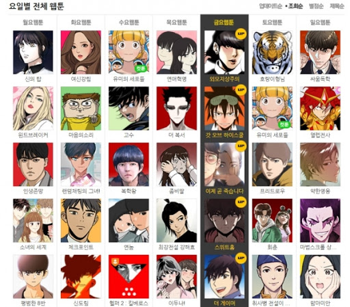

웹툰 (webtoon)

사전적 정의: [명사] 인터넷을 통해 연재하고 배포하는 만화. 웹(web)과 카툰(cartoon)의 합성어이다.
2009년 한국 만화는 100살이 되었다. 1909년 6월 2일 발행된 《대한민보》에 실린 시사 단평 만화를 한국 만화의 시작으로 보았을 때 2009년은 이 땅에 만화가 선보인 지 100년이 되는 해다. 1990년대는 한국 만화의 르네상스로 기록될 만했다. 우선 신문 시사 만화의 ‘두꺼비 아저씨’나 ‘왈순 아줌마’ 같은 고전적 캐릭터는 1990년대 후반 《조선일보》에 연재된 박광수의 ‘광수’(1997)나 동아일보》에 연재된 이우일의 ‘도날드 닭’(1998) 같은 유쾌하고 가벼운 캐릭터로 변화하기 시작했다. 거기에 만화 잡지의 전성기를 맞아 《보물섬》이나 《소년챔프》, 《르네상스》 같은 월간지는 물론이고 《댕기》, 《아이큐 점프》, 《윙크》 같은 주간지 혹은 격주간지 형태의 만화 잡지들도 꾸준히 발행되었다.
잡지에 실린 만화는 단행본으로 묶여 간행되었고 드라마나 게임, 영화 장르에 신선한 창작 재료로 활용되기도 했다. 게임 〈리니지〉, 드라마 〈궁〉, 〈풀하우스〉, 〈순정만화〉 등은 만화가 타 장르로 이동한 대표적인 사례다. 그러나 도서대여점의 난립과 불법 스캔 만화 유포, 출판 시장의 장기 침체 속에서 출판 만화 시장은 급속도로 위축되었고, 인터넷의 대중화와 함께 웹툰이라는 형식이 만화 잡지 역할의 일부를 담당하게 되었다.
웹툰은 인터넷을 뜻하는 ‘웹(web)’과 만화를 의미하는 ‘카툰(cartoon)’이 합쳐져 만들어진 신조어다. 웹툰은 플래시로 제작된 웹애니메이션을 뜻하는 용어로 사용되기도 했고 웹에서 형성된 모든 만화 형식을 대표하는 용어로 쓰이기도 했지만, 현재는 웹사이트에 게재된 세로로 긴 이미지 파일 형식의 만화를 뜻하는 용어로 쓰이고 있다. 박광수나 이우일처럼 대형 신문사에 근사하게 자리 잡지는 못했지만, 만화 칼럼니스트로 한국의 만화가들 가운데 가장 먼저 홈페이지를 만들고 웹진인 <네오코믹>에 만화를 연재한 박무직은 웹툰의 시조 격이라 할 만하다.
이후 웹툰이 현재의 형식으로 자리 잡게 된 데는 만화를 그리는 개인 블로거들의 힘이 컸다. 〈스노우캣〉, 〈마린 블루스〉, 〈파페포포 메모리즈〉 등 개인 블로거들의 홈페이지를 통해 연재된 다이어리 형식의 웹툰이 큰 인기를 끌면서 캐릭터 중심의 만화가 웹툰의 대명사로 인식되기 시작한 것이다. 세로로 긴 롤페이퍼 방식으로 창작된 작품에 포털을 이용하는 구독자가 댓글 형식의 감상평을 남기고, 인기 있는 만화를 다른 사이트로 옮겨 등록하는 펌질 등을 통해 웹툰은 활성화되었다.
2003년 다음(Daum)이 〈만화 속 세상〉이라는 코너를 개설한 것을 시작으로 웹툰 시장에 대형 포털 사이트들이 본격적으로 뛰어들면서 웹툰은 또 다른 전환점을 맞이하게 된다. 다음은 강풀을 비롯한 다수의 인터넷 출신 작가를 영입해 창작 콘텐츠를 연재했는데 이들의 작품이 신문에서 보던 4컷짜리 카툰 형식의 신변잡기적 에피소드 구성 대신 탄탄한 서사를 내재한 연재만화 형식으로 발전하기 시작한 것이다.
일회성이 강한 인터넷 환경의 특성상 웹툰은 쉽게 흥미를 끌 수 있는 유머 코드에 치중하는 경향이 강하지만, 이제는 강풀의 〈순정만화〉처럼 장편 연재 가능성을 지닌 작품이나 종이라는 형식의 제한에서 벗어나 다양한 실험적 시도를 모색하는 작품, 영화 콘티나 애니메이션과 유사한 형식의 컬러 만화 등도 찾아볼 수 있게 되었다. 인터넷 서점인 알라딘의 한 관계자는 “전체 만화 시장이 아직까지 출판사에서 출간하는 코믹스 위주이긴 하지만 웹툰의 비중이 갈수록 크게 늘어 2007년에는 9 대 1(코믹스 대 웹툰)에서 2008년에는 7 대 3 정도로 격차가 줄어들고 있다”는 말로 웹툰의 성장세를 설명했다.
[네이버 지식백과] 웹툰 [webtoon] (대중문화사전, 2009., 김기란, 최기호)